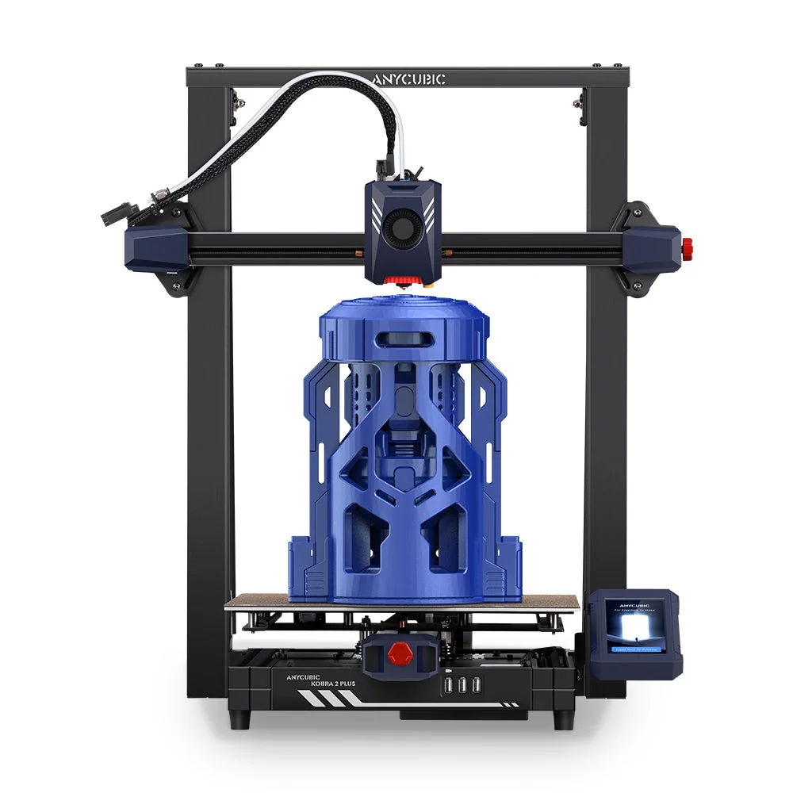

Build volume
400 x 320 x 320 mm stated HWD, i.e. 320 x 320 x 400 mm; Anycubic quotes 40.9 L
Advertised dimensions; check usable space and variants.
320x320x400 mm Kobra 2 with dual-motor dual-Z, 49-point levelling and a 90 C bed ceiling.

400 x 320 x 320 mm stated HWD, i.e. 320 x 320 x 400 mm; Anycubic quotes 40.9 L
Advertised dimensions; check usable space and variants.
260 C nozzle temperature ceiling; 0.4 mm replaceable nozzle
Published limits; hardware and firmware limits may differ.
$549.00 on store.anycubic.com, Aug 2026 (the compare-at price of $544.00 is lower than the sale price, which is a store data error rather than a discount)
Dated listing, not a live offer. Read the configuration and region.
Every recorded value stays with its conditions and original sources. Manufacturer claims and independent measurements are kept distinct.
Dimensions, construction and the hardware that moves the print.
| Property and unit | Published value and conditions | Sources and dates |
|---|---|---|
| Manufacturer & exact marketed model name (verify the exact product identity first) | Anycubic Kobra 2 Plus | 1 source |
| Release date (announcement and actual shipping) | Listed on the Anycubic store from 31 August 2023 (Shopify publish date) | 1 source |
| Street price (USD; dated snapshot per entry) | $549.00 on store.anycubic.com, Aug 2026 (the compare-at price of $544.00 is lower than the sale price, which is a store data error rather than a discount) | 1 source |
| Variants & sibling models — and how to tell them apart (spec-contamination risk) | Large Kobra 2. Against the small Kobra 2 machines: 320 x 320 x 400 mm build, 13 kg, dual-motor dual Z, 49-point LeviQ 2.0, 8 GB on-board storage and Anycubic APP support - but the bed ceiling drops from 110 C to 90 C, which matters for ABS and ASA. Anycubic's own comparison on the same page is against the older Kobra Plus (350 x 200 x 200 mm, Bowden, 180 mm/s), not against the Kobra 2 | 3 sources
|
| Property and unit | Published value and conditions | Sources and dates |
|---|---|---|
| Build volume X×Y×Z (mm) — advertised vs actually usable | 400 x 320 x 320 mm stated HWD, i.e. 320 x 320 x 400 mm; Anycubic quotes 40.9 L | 1 source |
| Machine footprint (mm) & clearance needed (cable/spool overhang) | 630 x 605 x 564 mm stated HWD - footprint about 605 x 564 mm | 1 source |
| Net weight (kg) | 13 kg | 1 source |
| Enclosure: open / enclosed; panel material; door/lid | Open frame, no enclosure | 1 source |
| Property and unit | Published value and conditions | Sources and dates |
|---|---|---|
| Kinematics (bedslinger i3 / CoreXY / other) | Cartesian bed-slinger with double metal spindles on X and Y and included belt tensioners | 1 source |
| Z-axis: leadscrew count & type, sync mechanism, anti-backlash | Dual-motor dual Z axis | 1 source |
| Property and unit | Published value and conditions | Sources and dates |
|---|---|---|
| Max print speed (claimed, mm/s) | 500 mm/s maximum print speed (Anycubic Lab figure) | 1 source |
| Recommended/typical print speed | 300 mm/s typical print speed (manufacturer figure) | 1 source |
Extrusion, heating, leveling and material handling.
| Property and unit | Published value and conditions | Sources and dates |
|---|---|---|
| Input shaping supported? Implementation (Klipper IS / Marlin ZV / proprietary) | One-click vibration compensation on X/Y plus flow control | 1 source |
| Property and unit | Published value and conditions | Sources and dates |
|---|---|---|
| Type (direct drive / bowden) & design name | Direct extruder with double gears | 1 source |
| Property and unit | Published value and conditions | Sources and dates |
|---|---|---|
| Max nozzle temp claimed AND firmware max temp limit (both values) | 260 C nozzle temperature ceiling; 0.4 mm replaceable nozzle | 1 source |
| Property and unit | Published value and conditions | Sources and dates |
|---|---|---|
| Max bed temp claimed AND firmware limit | 90 C hotbed temperature ceiling - lower than the 110 C of the small Kobra 2 machines | |
| Bed surface (material, texture, coating), single/double-sided | PEI magnetic spring steel plate, 320 x 320 mm | 1 source |
| Property and unit | Published value and conditions | Sources and dates |
|---|---|---|
| Auto bed leveling: probe technology (inductive / strain gauge / load cell / touch probe) | Anycubic LeviQ 2.0 automatic levelling, 49-point, with smart Z-offset | 1 source |
| Property and unit | Published value and conditions | Sources and dates |
|---|---|---|
| Filament runout sensor (type, location) | Filament detection fitted as default | 1 source |
| Property and unit | Published value and conditions | Sources and dates |
|---|---|---|
| Officially supported filament list | PLA, ABS, PETG, TPU (Kobra 2 family list) | 1 source |
Firmware, controls, connections and calibration.
| Property and unit | Published value and conditions | Sources and dates |
|---|---|---|
| Host computer (SoC, RAM, storage) if firmware runs on embedded Linux | Cortex-A7 1.2 GHz processor; 8 GB built-in storage | 1 source |
| Property and unit | Published value and conditions | Sources and dates |
|---|---|---|
| On-device UI capabilities (model preview, per-object controls, etc.) | Anycubic app support (firmware 3.0.5+) for remote monitoring, online slicing and control | 1 source |
Published safeguards, support terms and independent evidence.
| Property and unit | Published value and conditions | Sources and dates |
|---|---|---|
| Warranty length & support reputation (evidence, not vibes) | One year on the complete machine (excluding gifted and second-hand machines), with component warranty periods that vary by part; the period starts on the delivery date and is suspended while a replacement is in transit. Anycubic states it will follow longer local statutory periods where they apply | 1 source
|
This guide presents the catalog’s sourced record for this exact model. Source dates belong to each reference; a page update does not mean every specification has been rechecked.
Prices are dated listing snapshots, with configuration, regional and sale conditions. They are not current offers. Unknown values remain unfilled.
Firmware, variants and available accessories can change. Read the original reference before making a purchase or planning a process.